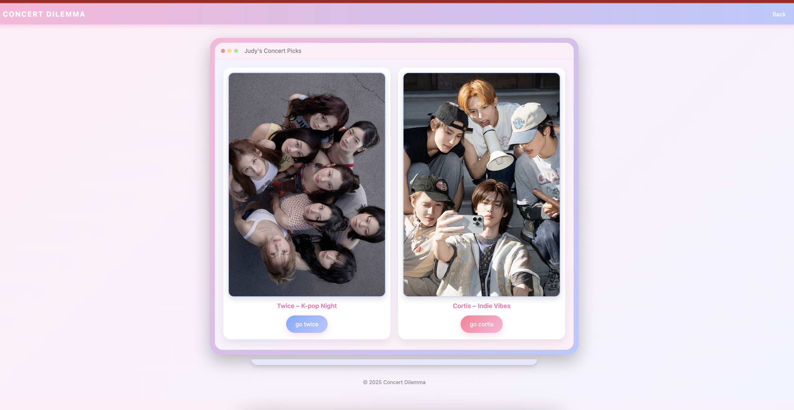
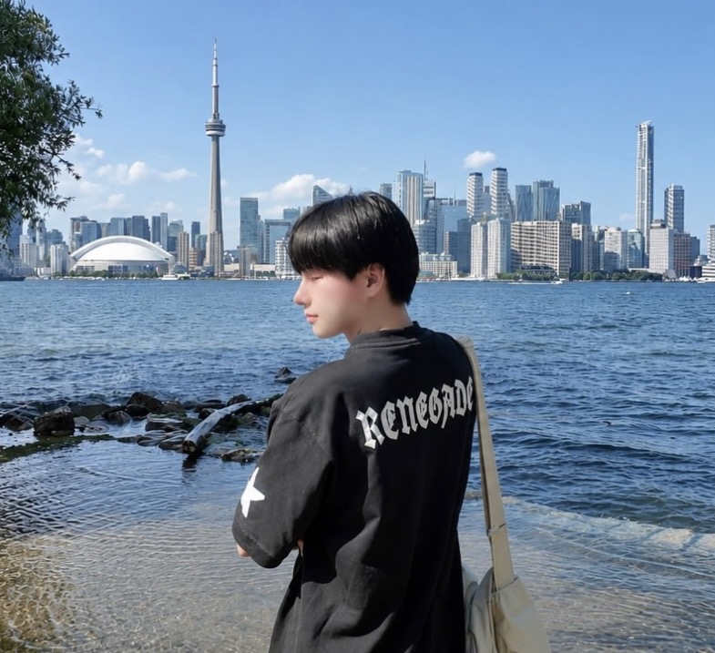
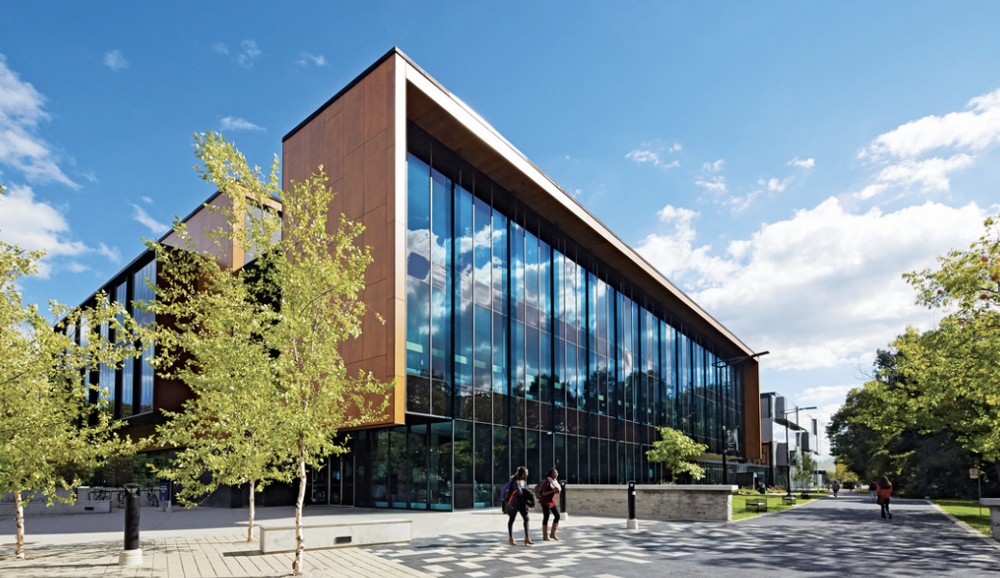
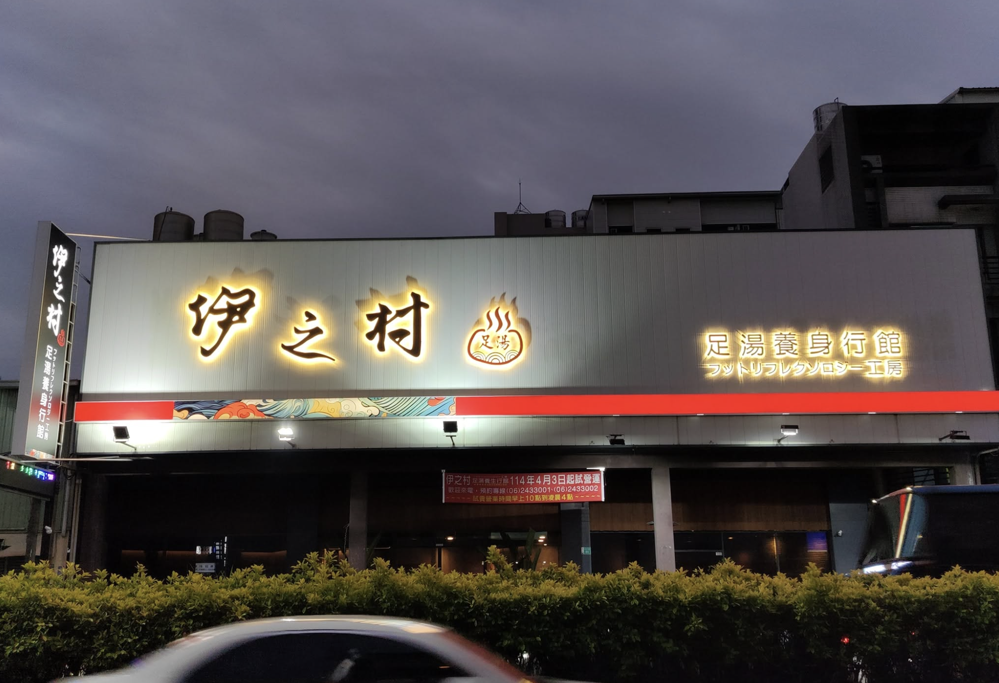

Web Design (Featured Project)
A website I designed and developed during my second year at the University of Toronto, exploring web design and front-end development.
View ProjectCREATIVE PORTFOLIO
After graduating from high school in Taiwan, I moved to Canada in 2024 to begin a new chapter of my life. The University of Toronto had always been my dream school. I'm currently a third-year student specializing in Digital Enterprise Management (DEM) at the University of Toronto Mississauga. Through my studies, I've developed a growing interest in marketing, business, and how technology is changing the way companies connect with people.
Explore My Work

A website I designed and developed during my second year at the University of Toronto, exploring web design and front-end development.
View Project
Exploring digital marketing, creative content, and social media strategies.
Learn More
A massage and wellness business in Taiwan, focused on customer experience and relaxation.
Learn More